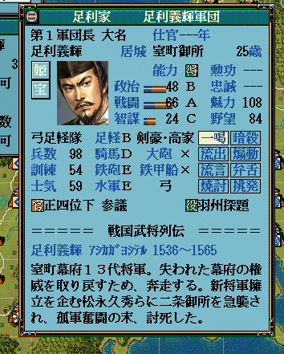
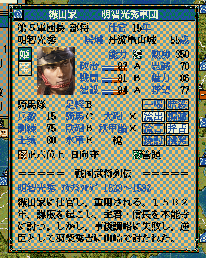

役職とは、「征夷大将軍」や「関東管領」、あるいは「四国探題」などのことです。
役職は、「大名家」もしくは「軍団」に与えられます。
勘違いしやすいところですが、役職は「人間」には与えられません。
即ち、「大名本人」や「軍団長」が武将として役職を持っているわけではなく、
「大名家」や「軍団」という組織に対して役職を持っているということになります。
よって、役職を持っている大名武将が亡くなったとしても、原則的には役職は継続されます。
また、軍団が役職を持っている場合には、軍団長を解任して、別の人物を軍団長にした場合、
その軍団の役職は保持されていますので、新たな軍団長の役職欄に役職が表示されます。
int Get_大名役職(int 大名番号【配列用】)
bool Set_大名役職(int 大名番号【配列用】, int 役職値)
void カスタム::On_プレイヤ担当ターン《メイン画面》() {
int i征夷大将軍DaimyoID = 0xFFFF;
// 征夷大将軍を持っている大名を探す
for (int iDaimyoID = 0; iDaimyoID < 最大数::大名情報::配列数; iDaimyoID++) {
if (Get_大名役職(iDaimyoID) == 役職::征夷大将軍) {
i征夷大将軍DaimyoID = iDaimyoID;
}
}
if (i征夷大将軍DaimyoID != 0xFFFF) {
int i征夷大将軍BusyouID = p大名情報[i征夷大将軍DaimyoID].大名【武将番号】 - 1;
if (0 <= i征夷大将軍BusyouID && i征夷大将軍BusyouID < 最大数::武将情報::配列数) {
デバッグ出力 << "征夷大将軍は" << Get_名字(i征夷大将軍BusyouID) + Get_名前(i征夷大将軍BusyouID) << "が支配する大名家が所持しています" << endl;
}
}
if (i征夷大将軍DaimyoID != 0xFFFF) {
// 征夷大将軍はやめて、羽州探題にする
Set_大名役職(i征夷大将軍DaimyoID, 役職::羽州探題);
}
}

void カスタム::On_シナリオデータ反映直後(int シナリオ番号) {
// シナリオ上から５番目の「本能寺の変」で開始して確認
if (Get_現在のシナリオ番号() == 5) {
int i明智光秀BushouID = Get_武将番号【配列用】(顔番号::明智光秀);
if (0 <= i明智光秀BushouID && i明智光秀BushouID < 最大数::武将情報::配列数) {
// 明智光秀は軍団長
if (p武将戸籍情報[i明智光秀BushouID].状態 == 状態::軍団長) {
// 明智光秀が属する軍団番号【配列用】を得る
int iGundanID = p武将情報[i明智光秀BushouID].所属軍団【軍団番号】 - 1;
if (0 <= iGundanID && iGundanID < 最大数::軍団情報::配列数) {
// 明智光秀が軍団長の軍団に対して「管領」の役職を与える
Set_軍団役職(iGundanID, 役職::管領);
// (特に意味はないが、Get をここで使って確認)
map<int, string> m{
{ 役職::無し, "無し" },
{ 役職::征夷大将軍, "征夷大将軍" },
{ 役職::管領, "管領" },
{ 役職::関東管領, "関東管領" },
{ 役職::奥州探題, "奥州探題" },
{ 役職::西国探題, "西国探題" },
{ 役職::九州探題, "九州探題" },
{ 役職::羽州探題, "羽州探題" },
};
// 今代入した軍団の役職をGetして Get_軍団役職の使い方を確認
int i役職 = Get_軍団役職(iGundanID);
デバッグ出力 << m[i役職] << "が明智軍団に設定されています" << endl;
}
}
}
}
}

「役職」に関する主な所は以上となります。詳しくは「役職情報型.h」や「役職情報列挙.h」を参照してください。